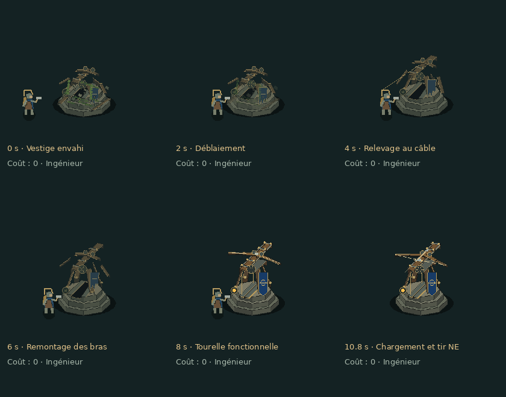

Les étapes du mouvement

Le socle garde son emplacement. Les gravats disparaissent pendant le déblaiement, la charpente se relève au câble et les bras se remettent en position. La finition rend ensuite le modèle réparé, prêt au chargement automatique.